Introducción
Me llamo Diego Leonel Cabezas Pineda, tengo 19 años y nací el 1 de noviembre de 2004 en San Salvador. Nací en el Hospital
Primero Mayo un lunes a la 1 de la tarde. Me gradué del Colegio Liceo Salvadoreño y estoy estudiando actualmente Ingeniería
de Software y Negocios digitales en la Escuela Superior de Economía y Negocios.
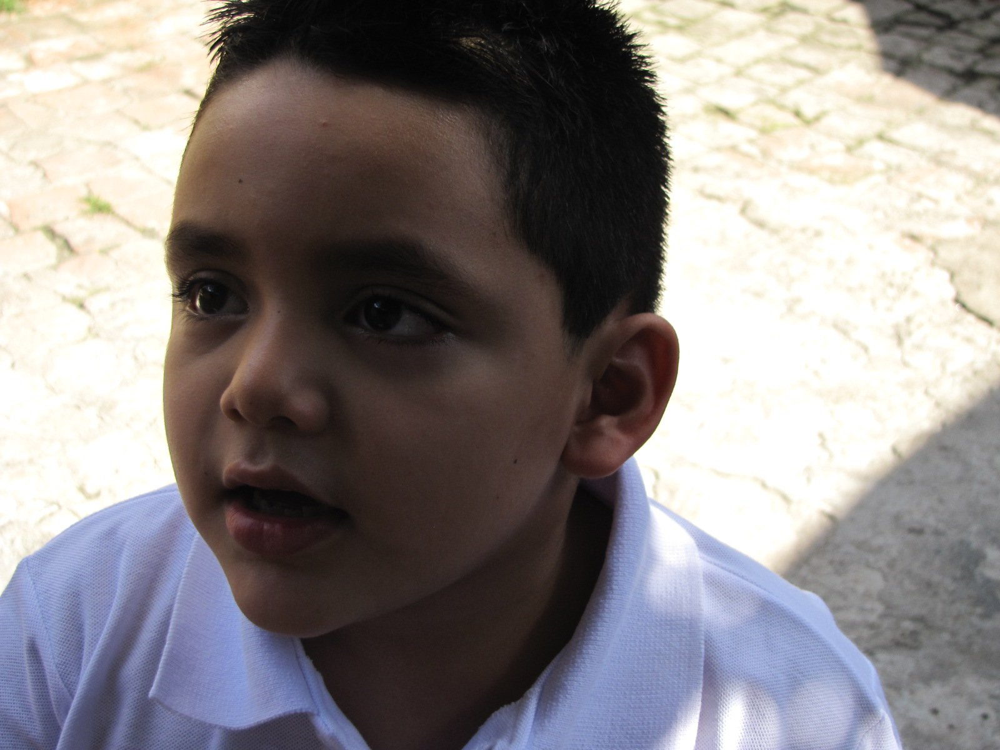
Educación
A lo largo de mis estudios, he pasado solo por 4 instituciones, la
Academia Europea, para estudiar inglés;
Kindergarten Santa Teresita, de kínder 1 a kínder 4; Liceo Salvadoreño
donde entré en 2011 a preparatoria y salí de bachillerato en 2022 y actualmente estoy en la
Escuela Superior de Economia y Negocios estudiando
Ingeniería de Software y Negocios Digitales
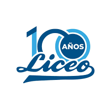
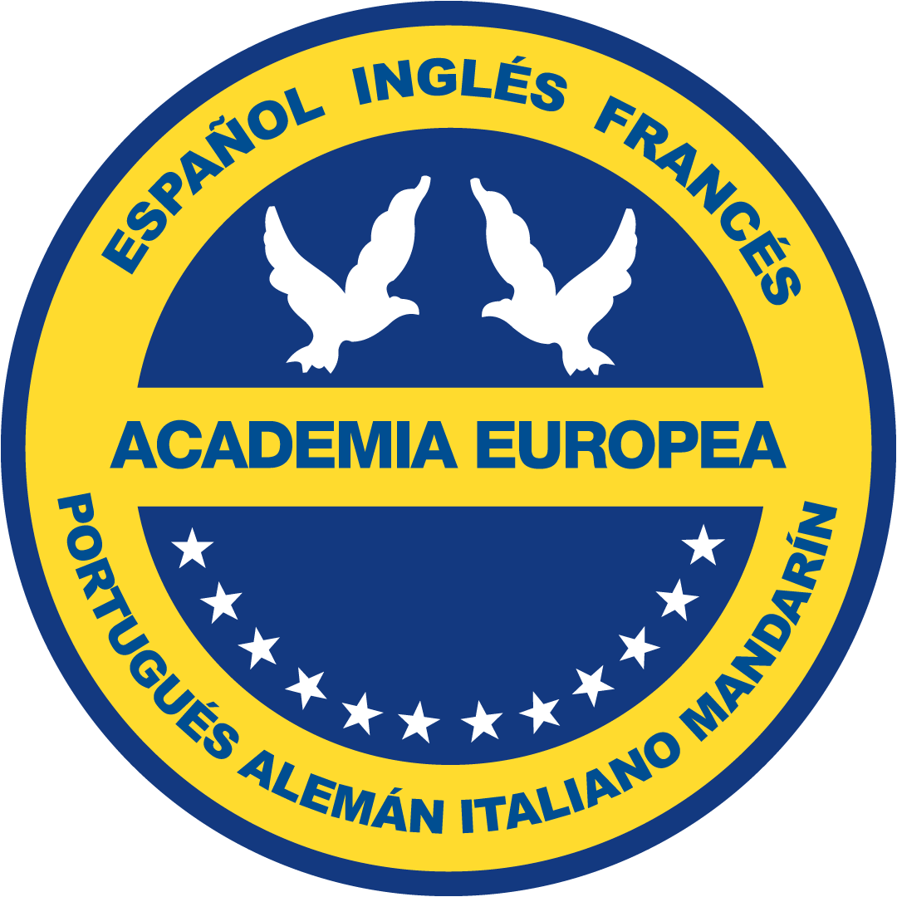
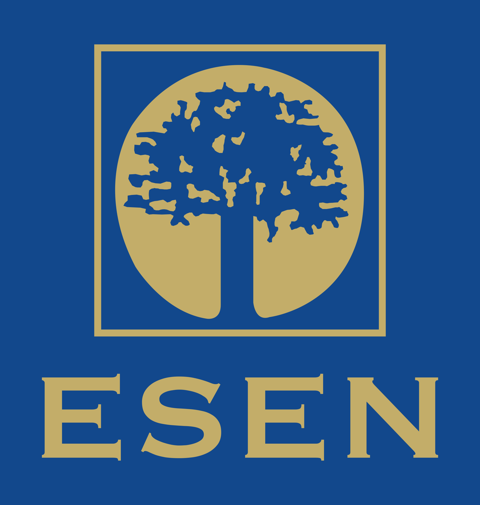
Vivienda
Nací en San Salvador en el hospital
1° de Mayo pero yo he vivido toda mi vida en Nejapa, un
pueblo que esta ubicado por las afueras de San Salvador. El pueblo es conocido por su historia con las bolas de fuego
y su patrono San Jerónimo.
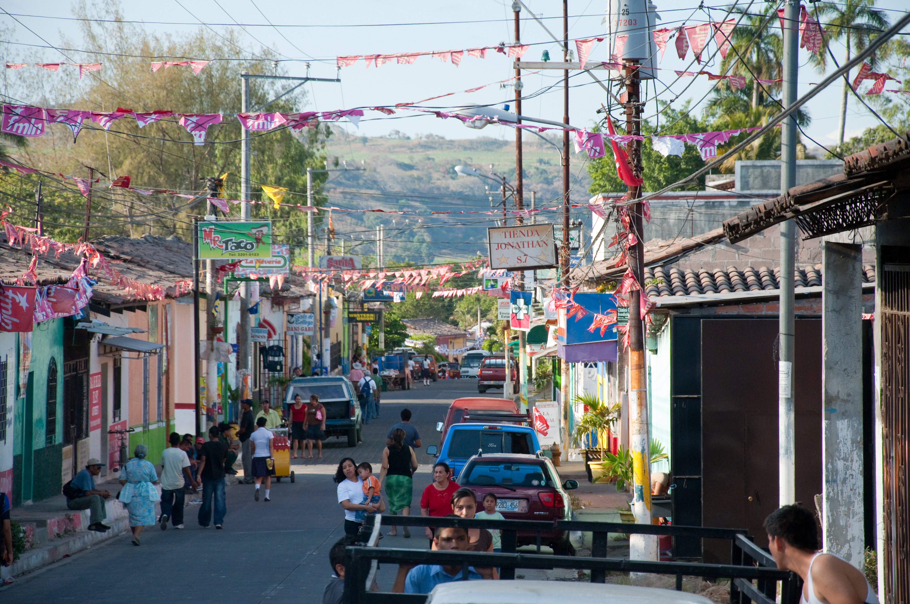
Familia
Mis papas son originarios de Nejapa, mi mama se llama Mery Estefany Pineda de Cabezas y mi papá Julio Leonel Cabezas Huezo,
de 46 y 51 años, respectivamente. Mi mamá tiene un negocio en el que vende productos como licuados y productos necesarios
para el hogar y mi papá se dedica a hacer planificaciones en una agencia de publicidad.
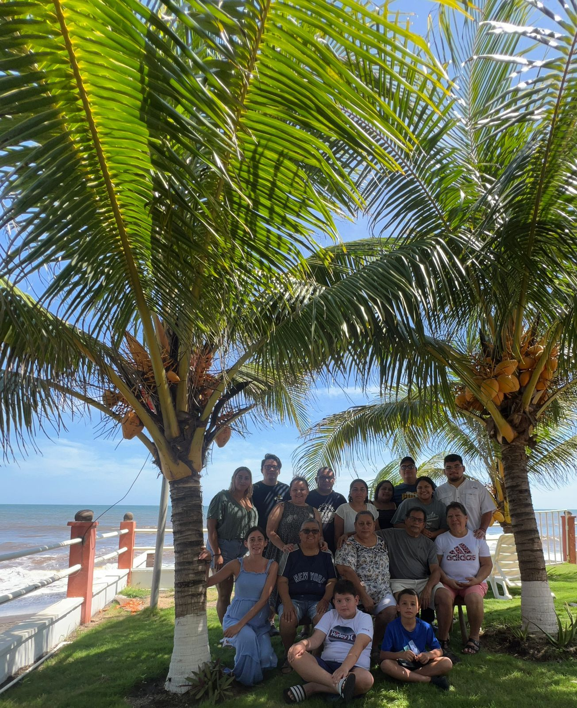
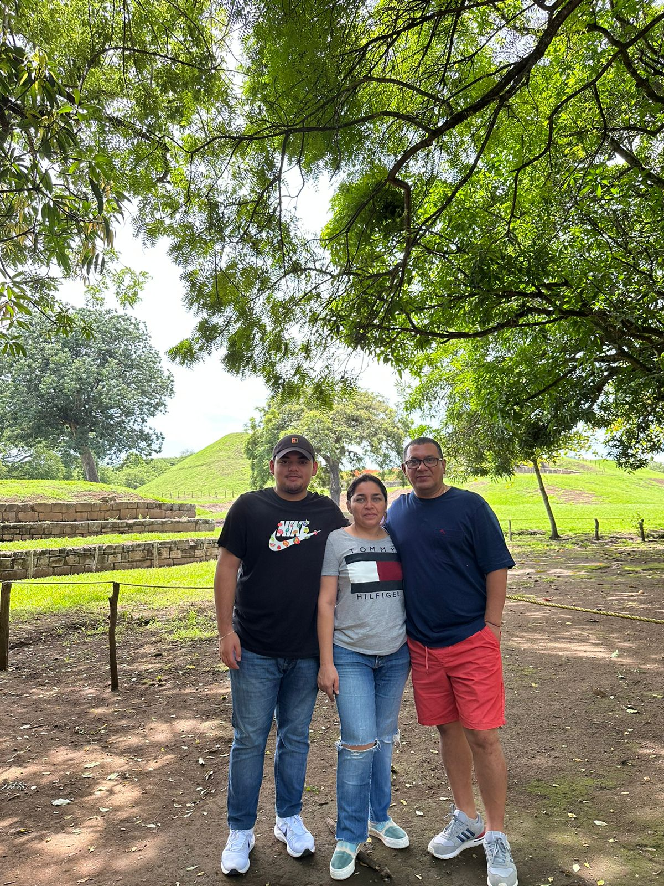
Tiempo libre
Soy una persona que disfruta mucho su tiempo libre, ya sea escuchando música, viendo series o películas. Mis cantantes
favoritos son: Alvaro Diaz, Rels B, Drake y Feid. Mi serie favorita es Brooklyn
Nine-Nine o How I Met Your Mother y mi película favorita de momento
es Interestellar de Christopher Nollan.
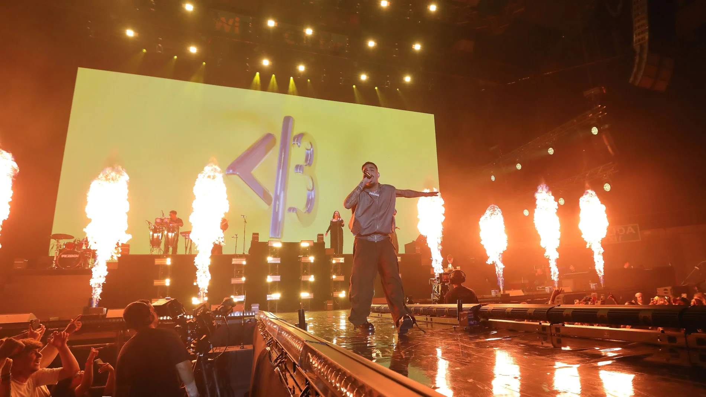
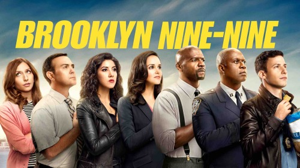
Hobbies
Tengo dos hobbies bien presentes, los videojuegos y los deportes. Los videojuegos han sido una parte importante en mi vida
desde que estoy pequeño ya que empecé a jugar en 2010 cuando mis papas me regalaron por mi cumpleaños mi primer PlayStation 3. Y los deportes igual, han estado muy presente en mi vida
gracias a mi papá, entrenando y viéndolos. Mi deporte favorito es el futbol, del que soy fan del FC Barcelona y mi videojuego favorito es Minecraft.
 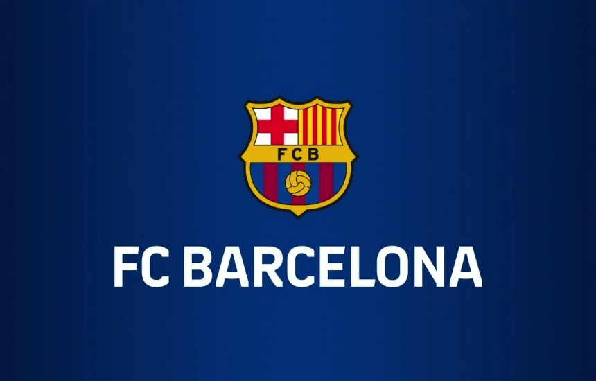
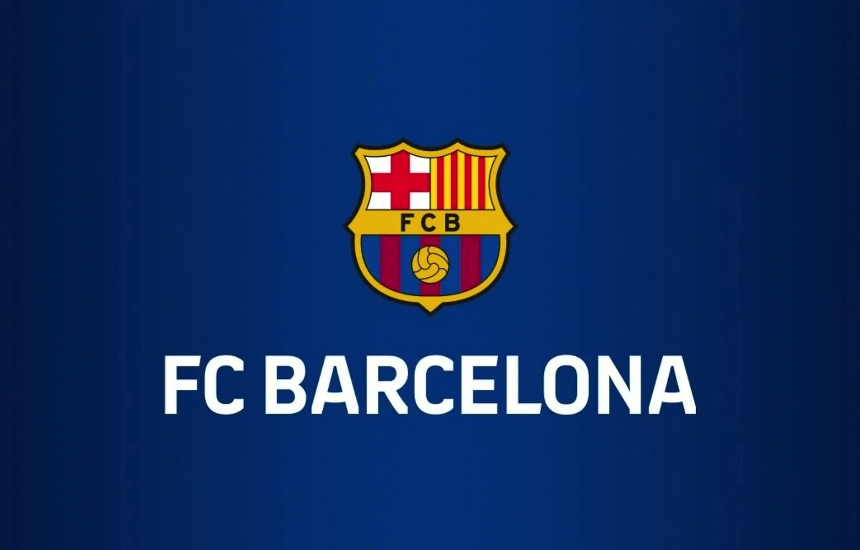